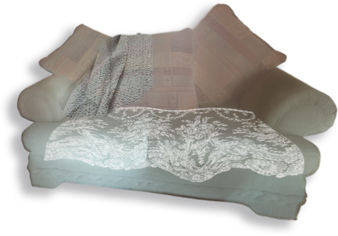
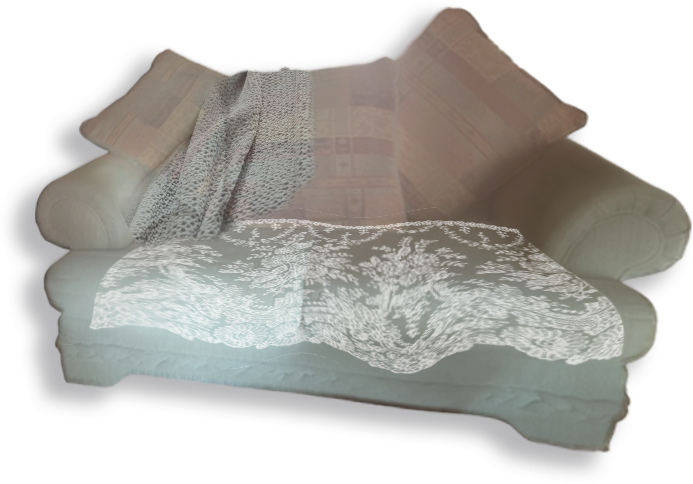

《欢喜来逗阵》第一集，大头石瑞克与精英黄婉婷相遇得并不体面，成为两个受诅咒家族里的一对欢喜冤家。《欢喜来逗阵》最后一集，重病的石瑞克死在黄婉婷身边，却被天使复活喜剧圆满收场。之间种种矛盾、和好、恋爱、分离，在漫长的八点档剧情里变成了毛玻璃后雾蒙的景象。
我想喜欢张宇的人很难不喜欢上石瑞克。瑞克是一个讨喜又不讨喜的人，他善良、真诚、勇敢，但笨拙、莽撞、不懂人情世故。你会因为他受的欺负、犯的错误对他生气；却又因为他温柔地对待每一个爱或不爱他的人、执着地修正自己的每一次不足，而对他心生一种敬佩的爱怜。他身上有种只属于喜剧片的原始的可爱，这样不聪明不世故的人发光的内心，只有在一切问题都以诙谐的方式引刃而解的时候，才能照耀到另一个真实的人的心里。而那些真实的不完美，因为是张宇的角色，因为他有双其实饱经风霜、沉稳而洞察的眼睛，就显得不再重要。剧里的瑞克不懂如何表达爱情，剧外的张宇为他唱：你有我没有过的向往，我才会一路苦苦追赶。
从小我就不太喜欢黄婉婷，她太任性、高傲，爱着一个错误的人，做着一些自以为正确的事。她也是个善良的女孩子，但因为我爱石瑞克，就不爱看到他因为这样一个女孩子受伤。我心想我能做得更好，我会一开始就看透他美丽的心，给他圆满大结局里所有的爱。但事实上当我真的遇到这样一个爱我却笨拙单纯的男孩子，才学会生活不总是情景喜剧，而是一场漫长而平凡，有关包容、学习与退让的修行。

我想喜欢张宇的人很难不喜欢上石瑞克。瑞克是一个讨喜又不讨喜的人，他善良、真诚、勇敢，但笨拙、莽撞、不懂人情世故。你会因为他受的欺负、犯的错误对他生气；却又因为他温柔地对待每一个爱或不爱他的人、执着地修正自己的每一次不足，而对他心生一种敬佩的爱怜。他身上有种只属于喜剧片的原始的可爱，这样不聪明不世故的人发光的内心，只有在一切问题都以诙谐的方式引刃而解的时候，才能照耀到另一个真实的人的心里。而那些真实的不完美，因为是张宇的角色，因为他有双其实饱经风霜、沉稳而洞察的眼睛，就显得不再重要。剧里的瑞克不懂如何表达爱情，剧外的张宇为他唱：你有我没有过的向往，我才会一路苦苦追赶。
从小我就不太喜欢黄婉婷，她太任性、高傲，爱着一个错误的人，做着一些自以为正确的事。她也是个善良的女孩子，但因为我爱石瑞克，就不爱看到他因为这样一个女孩子受伤。我心想我能做得更好，我会一开始就看透他美丽的心，给他圆满大结局里所有的爱。但事实上当我真的遇到这样一个爱我却笨拙单纯的男孩子，才学会生活不总是情景喜剧，而是一场漫长而平凡，有关包容、学习与退让的修行。


 
